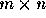
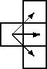
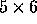
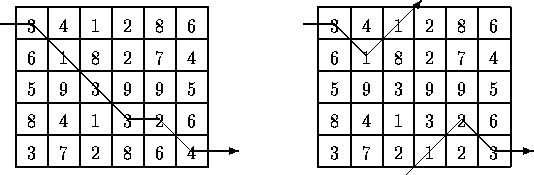
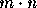

| Unidirectional TSP |
Problems that require minimum paths through some domain appear in many different areas of computer science. For example, one of the constraints in VLSI routing problems is minimizing wire length. The Traveling Salesperson Problem (TSP) -- finding whether all the cities in a salesperson's route can be visited exactly once with a specified limit on travel time -- is one of the canonical examples of an NP-complete problem; solutions appear to require an inordinate amount of time to generate, but are simple to check.
This problem deals with finding a minimal path through a grid of points while traveling only from left to right.
Given an

matrix of integers, you are to write a program that computes a path of minimal weight. A path starts anywhere in column 1 (the first column) and consists of a sequence of steps terminating in column n (the last column). A step consists of traveling from column i to column i+1 in an adjacent (horizontal or diagonal) row. The first and last rows (rows 1 and m) of a matrix are considered adjacent, i.e., the matrix ``wraps'' so that it represents a horizontal cylinder. Legal steps are illustrated below.
The weight of a path is the sum of the integers in each of the n cells of the matrix that are visited.
For example, two slightly different

matrices are shown below (the only difference is the numbers in the bottom row).

The minimal path is illustrated for each matrix. Note that the path for the matrix on the right takes advantage of the adjacency property of the first and last rows.
The input consists of a sequence of matrix specifications. Each matrix specification consists of the row and column dimensions in that order on a line followed by

integers where m is the row dimension and n is the column dimension. The integers appear in the input in row major order, i.e., the first n integers constitute the first row of the matrix, the second n integers constitute the second row and so on. The integers on a line will be separated from other integers by one or more spaces. Note: integers are not restricted to being positive. There will be one or more matrix specifications in an input file. Input is terminated by end-of-file.For each specification the number of rows will be between 1 and 10 inclusive; the number of columns will be between 1 and 100 inclusive. No path's weight will exceed integer values representable using 30 bits.
Two lines should be output for each matrix specification in the input file, the first line represents a minimal-weight path, and the second line is the cost of a minimal path. The path consists of a sequence of n integers (separated by one or more spaces) representing the rows that constitute the minimal path. If there is more than one path of minimal weight the path that is lexicographically smallest should be output.
5 6 3 4 1 2 8 6 6 1 8 2 7 4 5 9 3 9 9 5 8 4 1 3 2 6 3 7 2 8 6 4 5 6 3 4 1 2 8 6 6 1 8 2 7 4 5 9 3 9 9 5 8 4 1 3 2 6 3 7 2 1 2 3 2 2 9 10 9 10
1 2 3 4 4 5 16 1 2 1 5 4 5 11 1 1 19